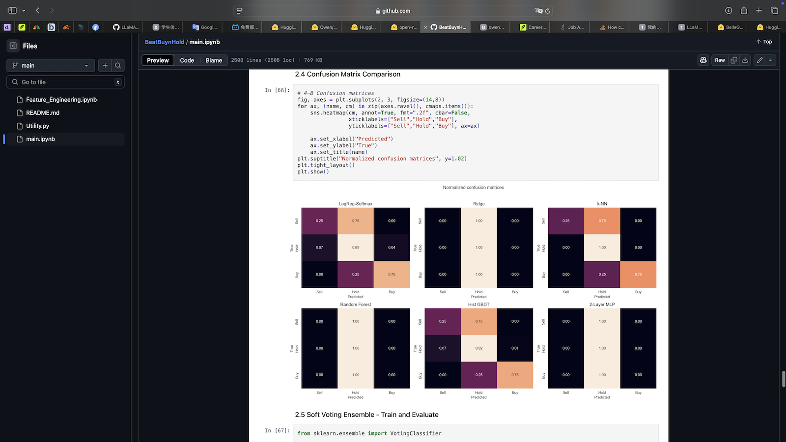
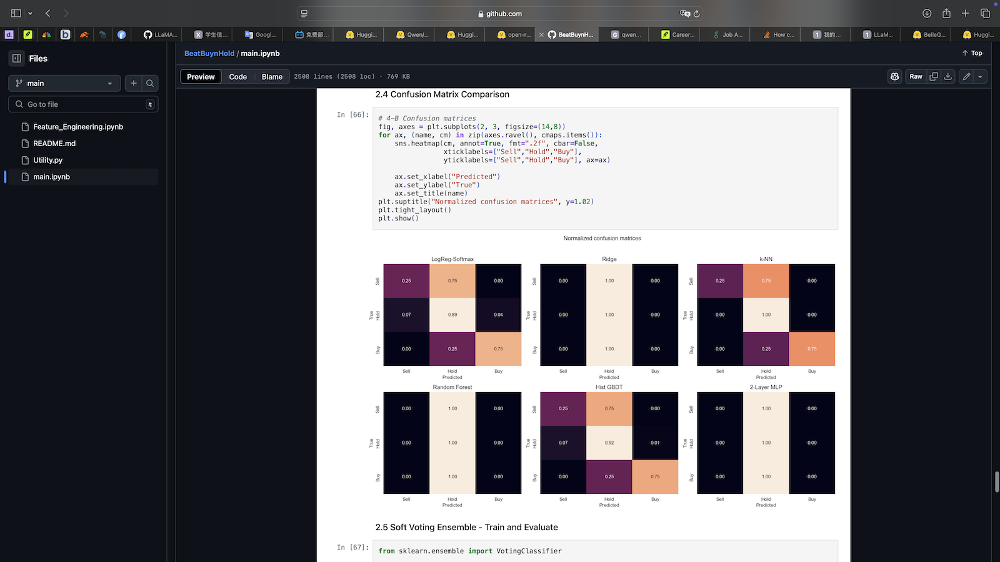

Applied Mathematics & Data Science @ University of Washington
Passionate about high-performance and parallel computing—especially GPU-accelerated workloads—and fascinated by uncovering relationships among data in high-dimensional spaces.
Seeking a summer internship to apply and deepen these skills while building and optimizing data-intensive quantitative systems.
B.S. in Applied Mathematics & Data Science Sep 2022 – Feb 2026 (expected)
GPA: 3.84/4.00

Built an ingest pipeline to handle high-frequency order flow at 100K orders/sec via async WebSocket I/O and zero-copy buffers. Performed on-the-fly feature aggregation and fed event-time-aligned data into downstream ML models for real-time analysis.

Built a Dijkstra's-inspired pipeline to iteratively expand cross-factor space, scoring candidates by global IC, rolling IR, and correlation for latent alpha drivers. Used SVD, UMAP/t-SNE, and KMeans for factor separability.

Collected and cleaned financial reports from SEC, generated Alpaca-style JSONL datasets, and fine-tuned Qwen-2.5-1.5B for ≈1.3x improvement in ROUGE-1/2/L scores on opencompass evaluation.
Built a three-class ensemble distinguishing high-frequency bullish, bearish, and neutral regimes; improved F1-score by 29% over a logistic baseline.
Implemented a virtual limit-order-book game and agent-based market participants to study microstructure dynamics and strategy P&L.
Implemented flocking, pathfinding, and synchronized ship behaviors across the network.


 
